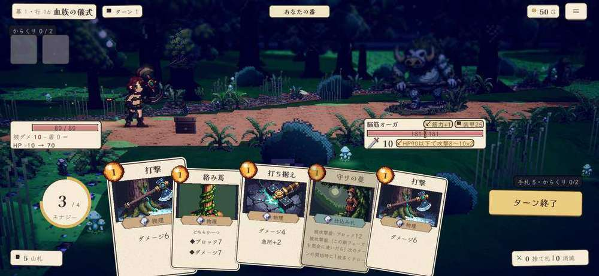

現状 (2026-09-16 35fc04a・スマホ相当・幕1ボス)。肌 (紙・二重線・水彩・手書き文字) は決定済み＝決めるのは「色の割り当て」
① 蜂蜜 (#e0b25a) が6役: 選択の縁・決定のボタン・G・エナジーの玉・置物の帯・レアの外線。何が「あなたの選択」で何が「資源」か色では読めない
② 意味の色6つ (薔薇・空・苔・藤・青緑・砂) がほぼ同じ明度と彩度。札の小さな帯やピルでは 空 (ブロック) と青緑 (仕込み札) と藤 (呪文) が見分けにくい
③ UI 12ファイルに 163 色の生の値 (`Hex("#…")`)。PaperFx / UiKit / Theme の3か所に同じ紙・墨・蜂蜜が別名で重複し、蜂蜜だけで7つの近い値 (下の帯)。一度「役割→色」の表を決めれば、ここを1か所に畳める
④ 夜は3つの紺 (#1a1c33 舞台・#20233a 札の窓・#0f1120 地) がなんとなく使い分けられている。紙＝暖・夜＝寒 の対比がこの UI の芯なので、夜の色も表に載せて決める
「蜂蜜のつもり」の7色 (実装値):
「淡い6色」(同じ明度帯):
4案は下。見本は同じ場面 (上部バー・自分と敵の帳面・手札2枚・からくり・置物・ボタン) を同じ配置で描き、色だけを差し替えている